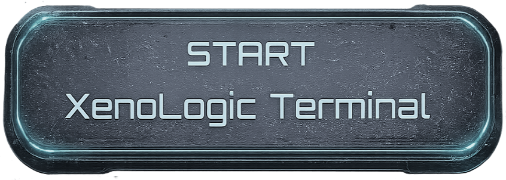

AXIOM STATION // ACTIVE SIGNAL WINDOW
Axiom Station has resumed classified observation across unstable alien sectors.
From orbital probes to deep-field drones, Axiom Station gathers classified records of species that refuse to behave in reasonable ways.
Your role is not to admire them. Your role is to determine what follows logically from the evidence.
Review the observation logs, isolate the valid conclusion, and file your report before the specimen changes its mind.

Start XenoLogic TerminalAuthorized analysts only!
Caution! Do not mimic observed organism behavior without proper clearance.